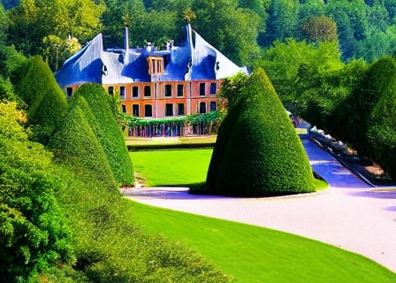

Bienvenue à Roybon, France

Découvrez notre village pittoresque
Roybon est un petit village de charme situé dans le département de l'Isère, en région Auvergne-Rhône-Alpes. Venez découvrir ses ruelles pavées, ses maisons en pierre et son église romane du XIIe siècle.
Visitez notre château historique
Le château de Roybon est un site incontournable de la région. Venez découvrir son architecture unique, son mobilier d'époque et ses jardins à la française. Des visites guidées sont organisées tout au long de l'année.